The Balmer series is the name given to a series of spectral emission lines of the hydrogen atom that result from electron transitions from higher levels down to the energy level with principal quantum number 2. There are four transitions that are visible in the optical waveband that are empirically given by the Balmer formula. The generalisation of this is the Rydberg formula, which also gives the other lines of hydrogen outside the optical region of the electromagnetic spectrum:
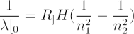 0} = RH ( \frac{1}{n_1^2}-\frac{1}{n_2^2} ) \end{align*}"width="189" height="49" /> |
where
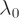
is the wavelength,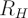
is the Rydberg constant for hydrogen (1.0968 × 10^7 per metre) and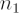
and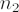
are integers corresponding to the principal quantum numbers involved in the transition with > .The Balmer series of transitions is labelled using Greek characters with
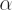
representing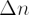
= 1,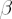
representing = 2, etc; the first four transitions are as follows:| =(-) | transition | name | |
| ( 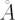 ) |
|||
| 1 | 3-2 | H | 6563 |
| 2 | 4-2 | H | 4861 |
| 3 | 5-2 | H 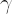 |
4341 |
| 4 | 6-2 | H 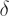 |
4102 |
Because hydrogen is the most abundant element in the Universe, the Balmer lines are a common feature in optical astronomy and the red H line corresponding to the electron transition from the
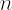
= 3 to the = 2 energy level gives the characteristic pink/red colour in true-colour images of ionized regions in planetary nebulae, supernova remnants and stellar nurseries.
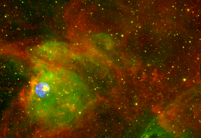
Credit: NASA/JPL-Caltech/CXC/NOAO/AURA/NSF
Other series in the hydrogen family of emission lines include the Lyman (transitions to = 1), Paschen (transitions to = 3), Brackett (transitions to = 4) and Pfund (transitions to = 5).